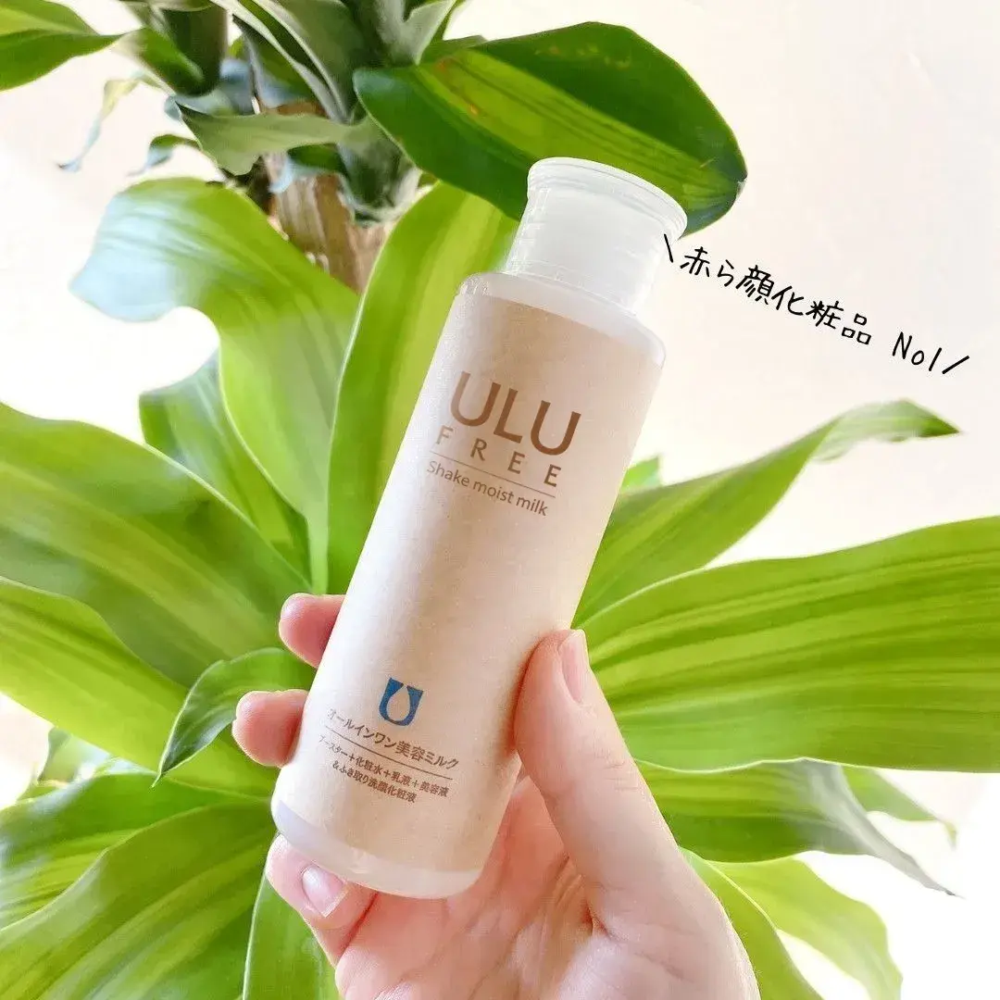

NICOLA organics 定期お届け便の条件と価格の読み方
条件確認｜公開日：2026年11月24日｜最終更新日：2026年11月24日｜情報確認日：2026年11月24日（確認：公式サイトの定期お届け便ページ）
NICOLA organics の定期お届け便は、初回の価格だけでは判断できません。3回以上の継続が条件で、解約や変更の締切も決まっています。この記事では効能の説明はせず、公式ページに書かれた条件と価格だけを確認します。価格と条件は変わるため、最終確認は公式ページの表示で行ってください。
公式ページの表示で確認してください
申し込み前に確認する3点
1. 継続は3回以上が条件
定期お届け便は、3回以上のお届けが条件です。3回のお届けが完了した後は、いつでも解約できます。判断は1回分の価格ではなく、条件の3回分まで続けた場合の合計でする形になります。
2. 解約と変更の締切は、公式ページ内に2つの表記がある
定期便の案内では、変更・お休み・解約は「次回お届け予定日の7日前までに電話で連絡」と書かれています。一方、定期便の中止の案内では「次回お届け日の10日前まで」という表記もあります。どちらの締切で扱われるかは、申し込み前に公式へ確認するのが確実です。連絡先は0120-51-8128（受付9:00〜18:00、日曜・年末年始を除く）です。お休みは2回までで、2回連続のお休みはできません。
3. 価格は通常価格と定期価格の2段
公式ページの表示（2026年11月24日確認）では、スキンセラピスト アプリコット＆ネロリ 美容オイル30mLが通常8,618円・定期6,894円、オイルとローションのセットが通常13,996円・定期9,980円、ホワイトフラワーVローション100mLが通常4,980円・定期4,303円で、いずれも税込です。
原料の表示について
公式ページでは、100％植物原料で、鉱物油・パラベン・合成着色料・合成香料・界面活性剤・アルコールを使っていないと表示されています。これは公式ページの表示の転記で、当サイトで効能を保証するものではありません。
広告（afb経由）：NICOLA organics の定期お届け便。価格と定期条件は公式ページの表示が最新です。
出典
- NICOLA organics 公式サイト「定期お届け便」のページ（条件・価格は2026年11月24日確認）。条件と価格の最新は、公式ページの表示で確認してください
- afbプログラム情報「NICOLA organics 定期コース」（PID8427、2026年11月20日提携）
ほかの記事

条件確認ULU定期の申し込み前に確認する条件 — 価格・回数・解約の表示の読み方 条件確認定期購入コスメの総額比較の読み方 — 「初回○円」ではなく最低継続回数までの総額で比べる
条件確認定期購入コスメの総額比較の読み方 — 「初回○円」ではなく最低継続回数までの総額で比べる